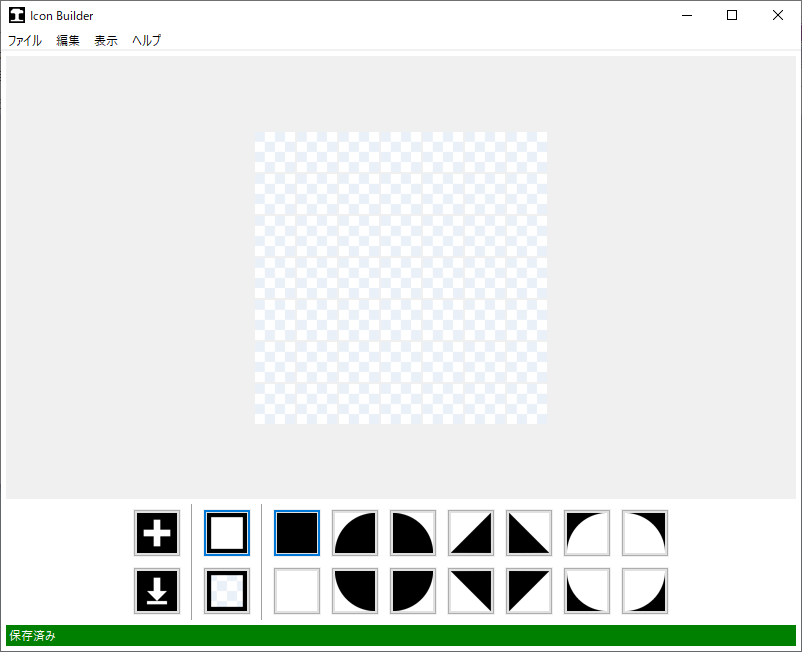
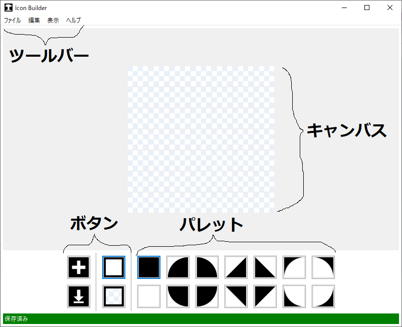
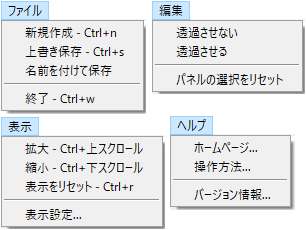
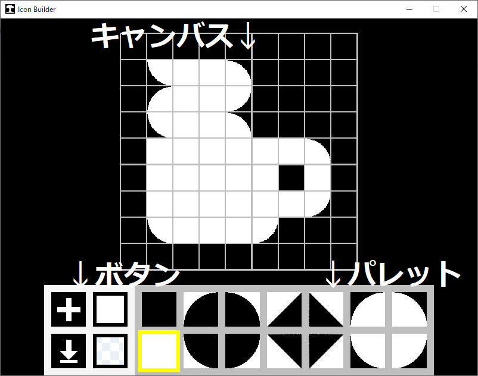

操作方法の説明です。説明は最新バージョン(Ver2.0)のものです。
GUI
本ソフトは次のような見た目をしています。

各UIの説明です。

「ツールバー」：様々な操作をまとめたメニューです。
「キャンバス」：ドット絵のそれとほぼ同じものです。
「ボタン」：それぞれ新規作成、上書き保存、パレットの種類を変更するボタンです。
「パレット」：キャンバスで塗る図形の種類を選択できます。
他にも、ダイアログや設定画面、下にあるステータスバーなどがあります。
操作一覧
操作の一覧です。ツールバーやボタン、ショートカットなどで呼び出せます。

ファイルタブ
「新規作成」：新しいキャンバスを、1×1から24×24までの大きさで作成します。＜Ctrl+n＞
「上書き保存」：現在のキャンバスを、ファイルに上書き保存します。＜Ctrl+s＞
「名前を付けて保存」：現在のキャンバスを、新しいファイルに保存します。
「終了」：ウィンドウを閉じます。＜Ctrl+w＞
編集タブ
「透過させない」：パレットの図形の背景の透過を無効にします。
「透過させる」：パレットの図形の背景の透過を有効にします。
「パネルの選択をリセット」：黒の正方形の図形を選択します。
表示タブ
「拡大」：キャンバスを拡大します。＜Ctrl+上スクロール＞
「縮小」：キャンバスを縮小します。＜Ctrl+下スクロール＞
「表示をリセット」：キャンバスの移動、ズームをリセットします。＜Ctrl+r＞
「表示設定...」：表示の設定画面を開きます。
ヘルプタブ
「ホームページ...」：トップページをブラウザで開きます。
「操作方法...」：このページをブラウザで開きます。
「バージョン情報...」：バージョン情報を表示します。
マウス操作
マウスの左ボタンで、キャンバスを塗ることができます。
マウスの右ボタンでドラッグすると、キャンバスを移動させられます。
その他
旧バージョン(Ver1.x)のGUIです。
上書き保存、キャンバスの移動とズーム、表示の設定ができません。
それ以外の機能は最新バージョンと同じです。